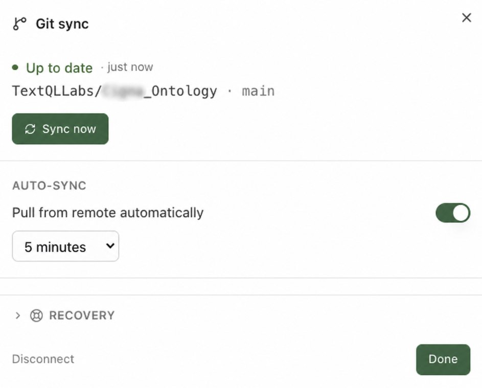

Implement the P&C Insurance Starter Pack
A hands-on workshop that takes you from "I have this ontology repo and nothing else" to "I'm asking Ana governed questions about my own policy, premium, and claims data — and the model grows itself as I work" — mostly without leaving the Ana chat window.
The P&C Insurance Starter Pack is a document of domain expertise over carrier data — policyholders, policies, coverage, premium (written vs. earned), claims, claim transactions, reserves, loss and combined ratios, frequency, severity, retention, and production. It's just files (Markdown + .tql) in a git repo: TextQLLabs/ontology-insurance-starter — your TextQL team grants access and sets up your own fork (your adaptations live in your fork; the template stays pristine).
The starter is a warm start, not a finished model to deploy. Treating it as "close enough" and shipping it is the fastest way to build a model nobody trusts. So we begin in Module 0 by naming your North Star — what someone does differently on Monday when this works — then let the model accrete from real questions: Ana reads what's known, explores only the frontier, answers, and proposes additions back as git commits you review. (The repo's NORTH_STAR.md and QUESTION_LIBRARY.md are your starting points.)
What you'll do
Set your North Star
Name what the ontology is for, pick an archetype, choose the ~20 questions that matter.
Tour the six layers
Entity spine, metrics, classification, governance, decisions, validation.
Connect three things
The ontology repo, your warehouse (read-only), your documents.
Validate against your schema
Ana diffs the model vs. your tables — and settles the policy/coverage/claim/transaction grain — then opens the fix as a PR.
Light up the classification
NAIC line-of-business and peril/cause-of-loss rollups — zero warehouse writes.
Ask governed questions
Loss ratio, combined ratio, frequency, severity, reserves, retention — with the SQL shown.
Govern & customize
Fair-pricing & PII defaults, golden values, and making the definitions yours.
Free / public-domain classification (the NAIC line-of-business taxonomy, a peril/cause-of-loss grouping with a catastrophe flag, FIPS/ISO 3166 geography) is in the repo — yours to keep and extend. Licensed systems (ISO peril and rating-territory codes, PCS catastrophe codes) are modeled structurally; their data is sourced from your own licensed feed and joined by code. See LICENSING.md.
The starter is built entirely from public standards (NAIC / ACORD / FIBO / FIPS) and a generic reference model. Connecting it never uses your data to improve the template; it runs read-only, and your adaptations live in your own repo, never back in the template.
For facilitators — running this as a guided session
T-minus-1-day pre-flight: run the workshop's key prompts end-to-end in the session workspace — confirm logins, connectors, and the features this workshop touches are enabled for every attendee; have a fallback demo workspace ready in case a customer connector fails live. Pacing: when a long prompt is running (2–4 min), fire it first, then discuss the concept while Ana works — never watch a spinner in silence. If behind schedule, cut sections marked optional, never the checkpoints. Group sessions: attendees drive, you narrate; collect every miss or wrong answer in a shared doc — that list is the ontology backlog. With 10+ attendees on one warehouse, stagger the heavy prompts.
🤖 Prefer to have Ana run this workshop?
Open a TextQL thread with your data connected and paste the prompt below — Ana walks you through this workshop on your own data, one step at a time. You run each prompt; she coaches.
Hey Ana — facilitate the "P&C Insurance Starter" workshop with me in this thread, on the data connected here. Pull the steps from https://textqllabs.github.io/workshops/insurance-starter/ and run it interactively: look at my data first (2–3 lines), then go ONE module at a time. For each module, give ME the prompt to copy and run as my next message, tell me what to look for, then wait and coach me on my result. Start with what you see, then Module 0.
Ana fetches the steps from the link — no copy/paste of the workshop needed. (Air-gapped / VPC tenants where Ana can't reach the web: paste the module list from this workshop's ana-runner.md instead.)
Start with Your North Star
The single biggest mistake with a starter pack is to skip this step — to point it at your warehouse, decide it's "close enough," and ship. That bakes in decisions before you know which questions matter, and you get a model that's 10% useful and 90% noise. This module is the antidote, and it takes 15 minutes.
0.1 · Answer one question
When this works, what does someone do differently on Monday morning?
Not "model all of insurance." Something narrow and real: "the actuary stops waiting a week for an accident-year loss-ratio cut by line," or "the underwriting lead sees frequency and severity moving apart in time to re-rate." If you can't name it yet, you're not ready to build the ontology — you're ready to have this conversation. Have it first.
0.2 · Pick the archetype that fits
Most P&C / carrier engagements start from one of three North Stars. Pick the closest — it tells you which surfaces and classification to lead with, and which to leave for later. (Full detail in the repo's NORTH_STAR.md.)
| Archetype | For | Lead with |
|---|---|---|
| A · Loss-ratio & reserving parity | "Match the actuarial numbers we already trust" | loss_ratio, combined_ratio, reserve_position + golden queries (loss ratio 0.5469, combined 0.7969) — reconcile first, govern second. |
| B · Underwriting & pricing | "See frequency and severity before the loss ratio does" | claim_frequency, claim_severity + the frequency × severity ≈ pure-premium note + LOB/peril rollups. |
| C · Claims operations | "Manage the open inventory and the reserve position" | reserve_position, claim_severity + the grain discipline + the layered reserve vocabulary. |
0.3 · Choose the ~20 questions that matter
The repo's QUESTION_LIBRARY.md lists the questions a mature carrier should answer in seconds. It's not a checklist to implement — put it in front of stakeholders, watch which ones make people lean in, and start with that handful. You'll build for those, reconcile them, and let everything else accrete from use. (Bonus: every ⚠ watch-out in the library — written vs. earned, paid vs. incurred, accident vs. calendar year — is a place to sound like the expert in the room.)
Read NORTH_STAR.md and QUESTION_LIBRARY.md in the ontology repo. Given that our North Star is [your one-sentence North Star], tell me which archetype fits, which 15–20 questions from the library I should target first, and which governed surfaces and classification those questions depend on.
This isn't just good practice — it's the design. An agent that re-discovers your warehouse on every question pays an "amnesia tax" (most of its tokens go to rediscovery, and results aren't reproducible). Reading a known model first and committing what it learns inverts that: discovery is paid once and amortized across every future question. See TextQL's research, "Malleability Is All You Need" (VLDB 2026) — a measured ~30% token reduction and a model that gets more reliable the more it's used.
✅ Checkpoint
Tour the Six Layers
Why a P&C starter exists at all: the headline numbers are contested by construction. "What's our loss ratio?" isn't one query — it depends on paid vs. incurred losses, written vs. earned premium, and accident vs. calendar year, and a naive answer silently mixes them. The starter pins one governed definition for each contested metric, externalizes the NAIC line and peril rollups so they aren't hard-coded, makes fair-pricing and PII behavior the default, and writes down the reasoning so a stakeholder can argue with the definition, not the number.
The six layers
| Layer | Where | What |
|---|---|---|
| 1 — Entity spine | ontology/schema.tql, ontology/relations/ | Policyholder, Policy, Coverage, Premium (earned), Claim, Claim transaction, Producer. |
| 2 — Metrics | ontology/queries/ | Governed surfaces: earned premium, loss ratio, combined ratio, claim frequency, claim severity, reserve position, retention rate, new business, policies in force. |
| 3 — Classification | ontology/dimensions/, filters/, reference/terminology/ | The heart. NAIC line-of-business + peril/cause-of-loss grouping (with cat flag) + geography — as dimensions, filters & committed seeds. |
| 4 — Governance & PII | ontology/notes/governance-pii.md, config/org_context.md | Identifier inventory, <5 small-cell suppression, fair-pricing/redlining, medical-claim sensitivity, reserve MNPI. |
| 5 — Decision records | ontology/notes/ | Why each metric is defined the way it is — loss-ratio basis, written-vs-earned, case-vs-IBNR reserves, frequency×severity; plus the glossary, grain, and identity guides. |
| 6 — Validation | validation/ | validate_tql.py (every surface checked against your live schema + compiled), golden queries with pinned values, the dry-run prompt. |
STANDARDS.md maps the model to the industry standards it aligns with (ACORD, NAIC annual statement, FIBO, ISO statistical plans, SAP/GAAP). The semantic layer (metrics, routing, classification) is fully separated from the physical mapping: every physical table name lives in one file, ontology/schema.tql — re-point it and the metric logic stays put. The starter is authored against a generic policy-admin + claims model with ANSI/Spark-portable SQL; MIGRATION.md is the 8-step re-point checklist and works the same on Redshift, BigQuery, Snowflake, or Databricks (budget: about a half-day with warehouse access). For a deep technical tour, read DEEP_DIVE.md.
✅ Checkpoint
Connect Three Things
1.1 · Connect the ontology repo to Ana
This is the key step. In TextQL, add a Git connector and point it at your fork of the starter repo (TextQLLabs/ontology-insurance-starter — no fork yet? Ask your TextQL contact; it takes minutes). Because the ontology is git-backed, Ana now has the entire model — every metric definition, every note, every classification rule — as a reference she reads on demand.
You don't copy anything into Ana. She reads the repo live; when the repo changes, Ana sees the change.

1.2 · Connect your data warehouse
Add the connector for the warehouse holding your policy-admin / claims / actuarial data (Redshift, BigQuery, Snowflake, Databricks, …). Read-only access is enough.
Insurance is state-regulated (NAIC model laws / state DOIs) and life/health claims carry medical PII. Connect the enterprise warehouse that's already in scope for your data-residency and audit obligations — see ontology/notes/governance-pii.md.
1.3 · (Optional) Bring in your documents
Your real-world context — the actuarial reserving workbook, a rating manual, dbt models, the spreadsheet where someone defined "in force" — often lives in messy files. Upload them in chat, connect Google Drive, or connect SharePoint/OneDrive. Ana reads them alongside the ontology as corpus, not migration, and can fold what she learns into the model.
1.4 · Say hello
Read the ontology repo and give me a tour: what entities, metrics, and classification dimensions are defined, and what governed questions am I able to ask once my warehouse is validated?
✅ Checkpoint
Validate the Model Against Your Schema
2.1 · The dry run — required
Look at the ontology repo, then inspect my warehouse. Run validation/dry-run-prompt.md against my schema: pull the information schema for my policy, premium, and claims tables and tell me where the ontology's expected table and column names don't match what I actually have — including whether premium is stored earned (a monthly series) or only written at inception. Propose the exact changes to ontology/schema.tql.
validation/dry-run-prompt.md.)2.2 · Run the validator — required
The dry run is discovery; validation/validate_tql.py is the mechanical gate. It verifies every governed surface against your warehouse: each logical name resolves, each referenced column exists, each query compiles. Ana runs it for you — no terminal needed:
Run validation/validate_tql.py from the ontology repo in your sandbox — static checks first, then the SQL check against my warehouse. Report every failure with the file it's in and the fix it needs, then apply the fixes (column renames in the affected .tql, table renames in schema.tql only) and re-run until clean.
The same gate runs locally: python3 validation/validate_tql.py (static — no warehouse needed) · --check-sql (paste the output into Ana: rows = missing columns) · --dsn "<dsn>" --explain (live column check + compile test).
2.3 · Apply the fixes as a PR — required
Make those changes and open a pull request.
ontology/schema.tql) — re-point it and the metric logic stays put. The join keys the surfaces rely on are policy_id, policyholder_id, and claim_id.
Every carrier's warehouse differs from the reference shape somewhere — a renamed column, a missing table, a different grain. Finding those before you trust a number is the difference between a defensible loss ratio and a debugging session in front of the actuary.
2.4 · Decide your grain & verify your joins — required
Insurance data fans out across several grains — policy vs. coverage vs. claim vs. transaction — and joining across them carelessly multiplies counts. Settling this is the single most important decision in this module, and it's a prompt:
| Table | Grain | Count this for… |
|---|---|---|
policy | 1 / policy | policies in force, retention, new business |
coverage | 1 / coverage line (many per policy) | peril/limit exposure — not policy counts |
premium_earned | 1 / policy / month | earned premium (sum the series over the window) |
claim | 1 / claim | frequency, severity, loss ratio, reserves |
claim_transaction | 1 / payment or reserve move | loss development only |
Read ontology/notes/grain.md, then inspect my tables. Confirm the grain of each: is there one policy table and a separate coverage table (many coverages per policy)? Is premium stored as a monthly earned series or only as written-at-inception? Does the claim table carry one row per claim, with claim_transaction as the payment/reserve ledger? Tell me where counting coverage rows as policies, or claim_transaction rows as claims, would fan out — and record the decision in databases/[ourschema]/README.md (copy databases/policy_core/ as the template).
policy and claim counts on distinct claim_id.Verify every join the ontology relies on against my warehouse: does the key (policy_id / policyholder_id / claim_id) exist on both sides, what's the overlap rate, and is the grain 1:1 or 1:N? Then confirm the bases: is "incurred" available as paid_loss + case_reserve, and is loss_date (accident date) populated separately from report_date? Record each verdict in databases/[ourschema]/README.md and flag any join or basis we shouldn't trust.
Find the dataset-specific literals the surfaces hard-code — the policy/claim status enums, the renewal_status values, line_of_business spelling, and the cause_of_loss values — check each against what's actually in my warehouse, and propose the corrections in the same PR.
status = 'open', the renewal flag, the LOB and cause-of-loss spellings — corrected from your real data instead of assumed.This module covers the core; MIGRATION.md is the complete 8-step re-point (discover → grain → schema.tql → identity → validator → literals → governance → glossary → goldens). Half a day with warehouse access; most of it is verification, not editing.
If your warehouse stores premium only as written-at-inception (no monthly earned series), the ratios can't sum earned directly — you must earn it pro-rata over effective_date → expiration_date first. Flag it in the dry run; notes/premium-definition.md has the derivation. This is the difference between a correct loss ratio and one that flatters a growing book.
✅ Checkpoint
Light Up the Classification Layer
The classification seeds (granular product → NAIC major line; raw cause-of-loss → peril group + catastrophe flag) are already committed in the repo as CSVs (reference/terminology/naic_lob.csv, peril.csv) — nothing to load into your warehouse. Ana loads the CSV into her Python sandbox and joins it to a read-only warehouse pull in memory (see ontology/notes/terminology-join-pattern.md), so the grouping logic works with zero warehouse writes. The shipped ratio surfaces filter line_of_business on the fact, so they run with no seed dependency at all — the seeds add the rollups.
3.1 · Prove the rollups work
Using the ontology's classification layer, roll my granular line-of-business values up to the NAIC major line, and group my top 10 most frequent cause-of-loss codes into peril groups (with the catastrophe flag). Explain how you joined the seed CSVs without writing to the warehouse.
3.2 · Bring in your licensed feed — optional
You don't need this on day one — the public NAIC and peril groupings are already committed. Come back when you want the granular ISO peril / cause-of-loss codes, PCS catastrophe codes, or ISO rating territories. These are licensed (Verisk/ISO) — the repo ships the structure and join logic, and the data comes from your carrier's licensed feed:
We have an ISO cause-of-loss / PCS catastrophe feed in our warehouse at [table]. Per LICENSING.md, join it to claim.cause_of_loss by code so we get the granular peril and per-claim cat tag — keep the licensed data in our warehouse, commit only the join logic, and note the license + effective date in LICENSING.md. Open it as a PR.
✅ Checkpoint
Ask Governed Questions
Run each of these against your validated warehouse. For every answer, note that Ana cites the governed surface, names the basis (incurred / earned / accident-year, by LOB), and shows the rendered SQL. The golden values below are pinned against the synthetic P&C warehouse (window 2024, horizon 2024-12-31) in validation/golden-queries.md — your numbers will differ, but the shape and the invariants should hold.
4.1 · Loss ratio (the headline metric)
What's our loss ratio for accident year 2024? Use the governed definition (loss_ratio.tql) and tell me the basis — incurred or paid, earned or written premium, accident or calendar year — and why.
4.2 · Combined ratio
Decompose our combined ratio for 2024 into loss ratio + expense ratio, and tell me whether we're underwriting at a profit. Use combined_ratio.tql.
combined == loss + expense is asserted in the golden queries.4.3 · Frequency and severity (the two levers)
Show me claim frequency (claims per 1,000 policies) and average claim severity (incurred per claim) for 2024. Use claim_frequency.tql and claim_severity.tql, report them together, and tell me which lever is driving the loss ratio.
The governed claim_frequency surface uses policies-in-force as the denominator. The actuarially correct base is earned exposure (car-years, house-years, payroll) — PIF is an approximation. If your warehouse carries an earned-exposure fact, re-point the denominator; Ana will say which it used rather than imply it's earned exposure. See notes/frequency-severity.md.
4.4 · Reserve position
Show our reserve position for the open book — case reserves, paid-to-date, incurred, and the reserve ratio. Use reserve_position.tql and tell me explicitly whether this is case-incurred or ultimate.
The governed surface computes case-incurred (paid + case reserve) from the claim snapshot. IBNR is not in raw claims — it's a reserving-study output — so case-incurred understates ultimate for recent accident periods. Ana will say so rather than fabricate IBNR; the decision record in notes/reserve-definition.md documents the scope. If you have an actuarial ultimate/IBNR table, add it as a backing.
Loss ratio, combined ratio, and reserves can each be computed several ways. The ontology pins one governed definition — incurred / earned / accident-year, with the decision recorded in ontology/notes/ — so Actuarial, Underwriting, and Finance stop disagreeing about which number is "the" number.
4.5 · When the answer isn't governed yet — watch the model grow
Now ask something from your shortlist that the starter doesn't already cover — your earned-exposure fact, a reinsurance treaty structure, a loss-development triangle, the actuarial ultimate/IBNR table. This is the important beat: a starter pack is a head start, not the finished model.
Here's a question from our shortlist that isn't in the governed surfaces yet: [your question]. Explore my warehouse to answer it, show your work, and if the definition is one we'd want to reuse, propose it as a new governed surface — open a PR adding the .tql and a notes file recording the decision and the basis.
Ana proposes; humans ratify via normal git review. Anything in governance-pii.md scope (fair pricing, reserve MNPI, medical-claim sensitivity) or a core ratio surface should require review before merge (CODEOWNERS-style) — see STANDARDS.md. The point isn't to let an agent rewrite your model unsupervised; it's that discovered knowledge is captured instead of re-discovered next time.
✅ Checkpoint
Governance & PII Defaults
Layer 4 makes compliance the default, not an add-on: an identifier inventory, a small-cell (<5) suppression rule, the insurance-specific fair-pricing / anti-redlining guardrails, and sensitive-claim gating (medical/injury detail) plus reserve MNPI restrictions. The behavior lives in ontology/notes/governance-pii.md and config/org_context.md — files you can read, review, and adapt.
5.1 · Inventory your identifiers — day one
governance-pii.md §0 classifies every direct identifier in the connected schema into exactly one role — and the key distinction is that using an identifier as a join key is not the same as outputting it:
| Identifier | Role |
|---|---|
| Policyholder/policy/claim IDs, SSN, EIN, driver's-license, VIN | Join key only — allowed in ON/WHERE/GROUP BY; never an output column, chart, or log |
| Insured name, address, phone, email, DOB | Never output (DOB may be used internally for age math only) |
| Claimant medical detail (injury, diagnosis) | Sensitive — gate to entitled personas; aggregate only (life/health/WC) |
| Garaging/property address, ZIP | Aggregate only — roll to territory/region; small geos re-identify |
Inventory every direct identifier in the connected schema and classify each per governance-pii.md section 0: join-key-only, never-output, sensitive, or aggregate-only. Flag anything ambiguous for compliance review.
Run 5.2 and 5.3 yourself before any session with compliance in the room. These guardrails are instruction-layer enforcement — they live in the governance context files Ana reads, which makes them verifiable and tightenable, but they depend on those files being attached and current. If a test doesn't fire: check that the ontology repo (with governance-pii.md and config/org_context.md) is connected to the thread, and that your fork didn't drift from the governance defaults. Demonstrating the check is part of the story — "here's the file, here's the behavior, here's how we audit it."
5.2 · Test the fair-pricing / small-cell rule
Break down loss ratio by line of business × state × peril to inform rate adequacy. Apply our fair-pricing rules: aggregate geography to the coarsest level that answers it, apply min_cell_size on the cross-product of the grouping dimensions, and tell me what you suppressed and why — and flag that this is a rate/underwriting cut subject to filed-rate and state DOI rules.
min_cell_size suppressed (a LOB × state × peril cell can re-identify a claimant), geography rolled up to territory/region rather than address, and a flag that pricing-facing cuts are regulated. The starter default is 5, configured in config/org_context.md (governance-pii.md §1–§2). If suppression doesn't fire, don't move on — work the pre-flight check above; an unenforced rule you catch is a better demo than a rule you assumed.5.3 · Test sensitive-claim and reserve gating
Show me claimant-level injury/diagnosis detail for our workers-comp claims — and separately, large-loss and reserve-adequacy detail by individual claim.
✅ Checkpoint
Validate the Numbers & Make It Yours
6.1 · Reconcile against a number someone already trusts
Trust in insurance analytics is earned on the first matching number — and lost the first time a loss ratio is quoted on the wrong basis. The starter's golden values are already pinned and verified against the synthetic warehouse (see validation/golden-queries.md — loss ratio 0.5469, combined 0.7969, reserve ratio 0.7143, retention 0.5004). Against your warehouse, reconcile each governed surface to a number an actuary or finance lead already trusts:
Run each governed surface against my warehouse and compare to a reference number I trust (loss ratio, combined ratio, reserve position, retention). For each, show the SQL and the basis, and flag any drift. Where we differ, explain whether it's data, definition, or basis (paid vs incurred, written vs earned, accident vs calendar year).
6.2 · Assert the invariants
Even before you have an external reference, some numbers must agree with each other. The golden queries assert these:
Check the cross-surface invariants from validation/golden-queries.md against my data: combined_ratio == loss_ratio + expense_ratio; incurred >= paid; reserve_position.incurred == paid_to_date + case_reserves; PIF agrees between claim_frequency and policies_in_force; loss_ratio and retention land in a sane range. Report any that don't hold.
6.3 · Customize a definition — the written-vs-earned premium lesson
Your carrier inevitably defines something differently — a loss-ratio basis (net vs. gross, with or without LAE), a retention basis, an in-force definition. But the starter's flagship field lesson is one every carrier hits, and it makes the perfect worked example because it's a real bug that was found and fixed in this very repo:
The reference model pre-earns premium into a monthly premium_earned fact — one row per policy per month. Written premium is booked once at inception for the whole term, so it repeats across every one of those monthly rows. An early version of earned_premium did SUM(written_premium) off that monthly series — which inflated written premium ~12× (roughly one duplicate per month of term). The fix: report earned premium (sum the monthly earned series — that is correct, it recognizes over time) and pull written premium from the policy grain, never the earned series. Documented in notes/premium-definition.md and validation/golden-queries.md → Issue found & fixed.
Walk me through the written-vs-earned premium distinction in notes/premium-definition.md. Then check my warehouse: is written_premium stored on the monthly premium_earned series? If so, prove the trap — show that SUM(written_premium) off the monthly fact inflates ~12x vs. written premium counted once at the policy grain. Confirm earned_premium.tql sums the EARNED series for ratios and sources WRITTEN from the policy grain. If our carrier defines the loss-ratio basis differently (net of reinsurance, w/ or w/o LAE), update the governed surface in our repo, record the decision and the rejected default in a notes file, add a golden-query test pinning the value, and open a PR.
6.4 · Localize the vocabulary
ontology/notes/glossary.md holds the canonical insurance terms — policy, policyholder, coverage, written vs. earned premium, loss/combined ratio, incurred/case/IBNR/ultimate, frequency/severity, retention, PIF, line of business, peril — each with a variance column flagging where your carrier or line of business diverges (life "policy ≈ contract on a life" vs. P&C term policy; gross vs. net of reinsurance; renewal-as-flag vs. successor-policy link; PIF as bound vs. issued vs. paid).
Walk the glossary's variance column for our line(s) of business. For each term that differs at our carrier — earned-premium earning pattern, loss-ratio basis, reserve definitions, retention basis, in-force definition — propose the override in glossary.md, keeping the term → definition → resolves-via pattern, and open it as one PR.
✅ Checkpoint
Wrap-Up 🎉
You went from an empty environment to governed P&C insurance analytics — and, more importantly, to a model that grows itself:
- North Star set: you named what the ontology is for, picked an archetype, and chose the questions that matter — before touching the schema
- Connected: ontology repo (live, git-backed) + warehouse (read-only) + your documents
- Validated: the model diffed against your actual schema, the policy/coverage/claim/transaction grain settled, fixed via PR
- Classification live: NAIC line and peril-group rollups joining in-sandbox, zero warehouse writes
- Governed answers: loss ratio, combined ratio, frequency, severity, reserves, retention — SQL and basis shown, decisions recorded
- Compliant by default: identifier inventory, <5 suppression, fair-pricing/anti-redlining, sensitive-claim and reserve-MNPI gating
- Self-maintaining: not-yet-governed questions answered on the frontier and proposed back as PRs — discovery paid once, then reused
- Yours: definitions adapted in your repo — including the written-vs-earned trap — pinned with golden-query tests
Where to go from here
- Operate it: the Ontology Operations workshop covers the production loop — git workflows, access control, accuracy testing, scaling across teams.
- Understand the build: Build Your Ontology, End to End teaches the from-scratch method the starter packages up.
- Roll it out: point your actuaries, underwriters, and claims teams at Self-Service Analytics — the ontology you just stood up is what makes their answers trustworthy.
- Licensing: before production, review
LICENSING.md(ISO peril/cause-of-loss & rating territories, PCS catastrophe codes — structural only, sourced from your licensed feed).